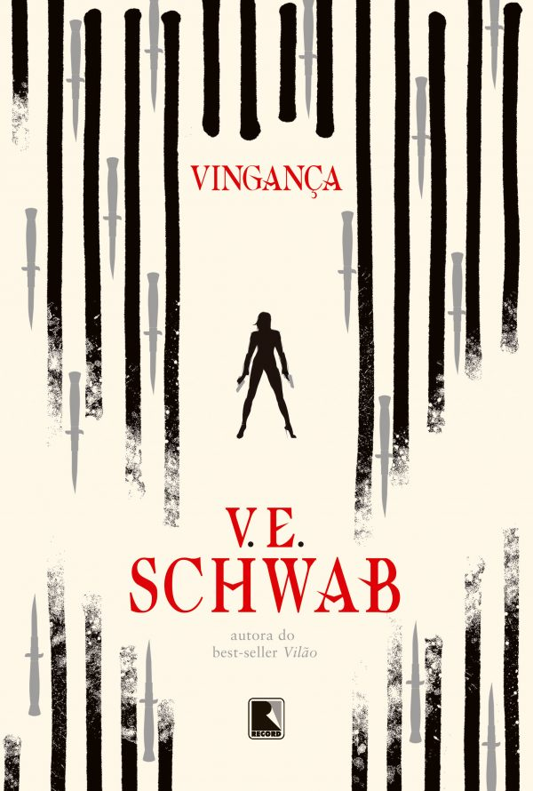

Tradução Literária
"Entre uma língua e outra, o que procuro é o silêncio onde as palavras respiram."
Tradução é o coração do meu trabalho. Já dei voz em português a narrativas de diferentes estilos — da fantasia e da ficção científica à prosa literária contemporânea.
Editoras com que colaboro:
Record
Morro Branco
Trama
Aleph
Globo Alt
Sextante
Algumas obras traduzidas:

A Vida Invisível de Addie LaRue

Os Frágeis Fios do Poder
Vilão

Vingança

A Profetisa do Fim

Série Carne e Sangue
Vardø: A Ilha das Mulheres

Em Fogo Lento

As Aventuras de Amina al-Sirafi

O Capítulo Secreto

Julia e o Tubarão

Como Capturar um Tigre

A Caçadora de Arz

Kate Daniels: Sangue Mágico
Em breve
- Thriller de mistério e fantasia — Robert Jackson Bennett (Aleph)
- Romance especulativo — Sarah Jio (Livros da Alice)
- Thriller — R. B. Egan (Trama)
- Romance YA — Alex Light (Globo Alt)